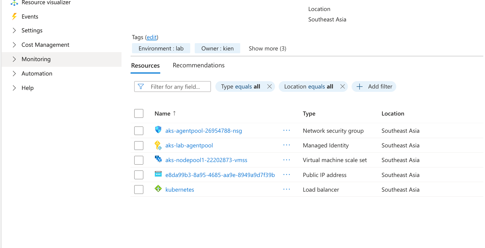
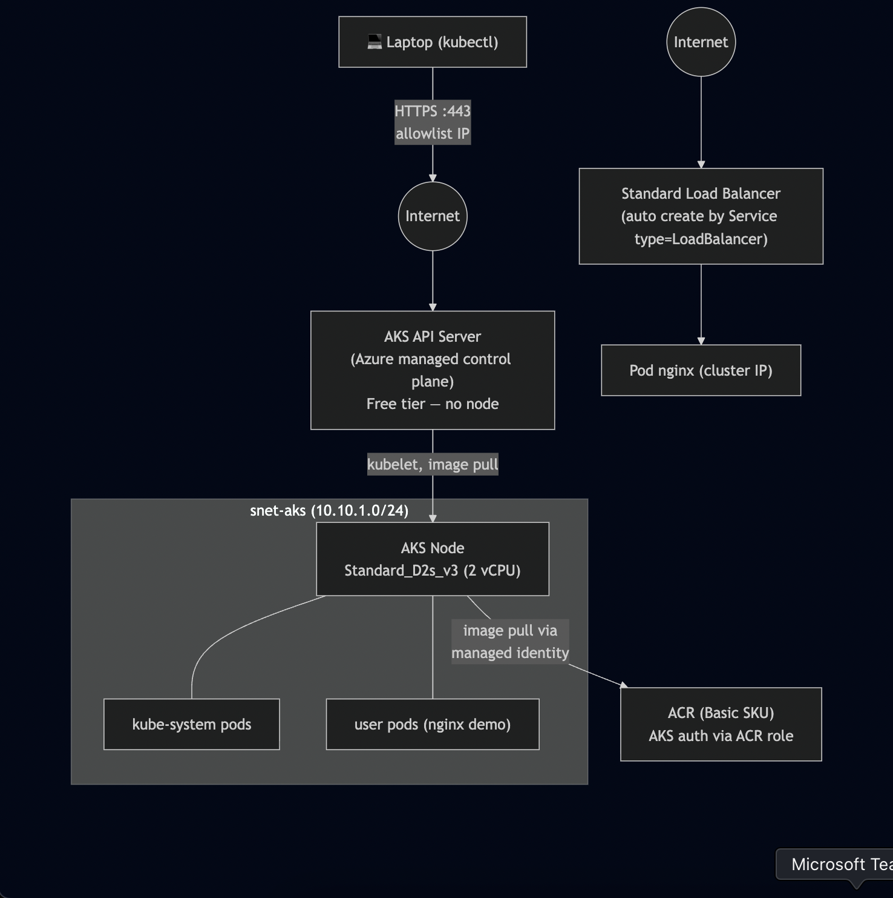
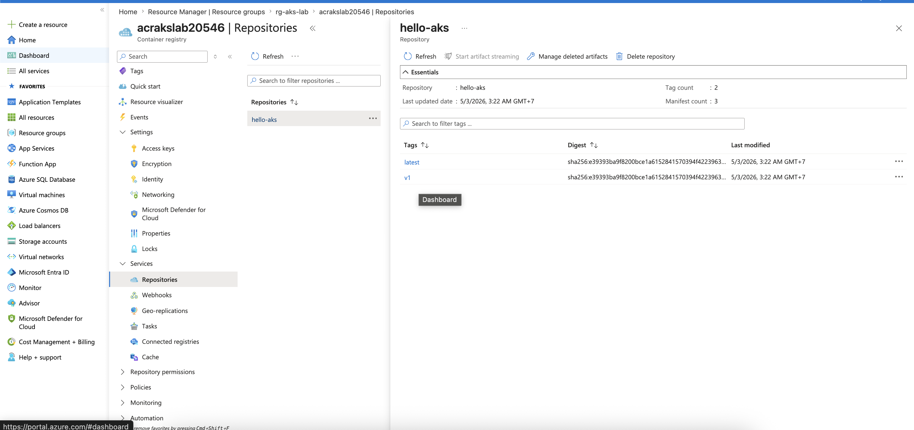

Introduction
I tried to learn Azure to prepare for certification AZ-104, but I really got bored while watching videos in the Udemy course. So I decided to learn a real project from basic to a little level higher than basic xD (not really advanced)
Prerequisite
This is not an introduction to Azure, so I'm assuming you have little knowledge related to Azure with the following sections:
- Azure CLI!
- VNet (Virtual Network): Subnet, NSG (Network Security Group)...
- Azure Container Registry (ACR)
- Kubernetes Service (AKS)
- and so on...
Also, I'm using a trial account with 200$ credit and a very, very limited resource quota for this lab!
Standard_D2s_v3 is only SKU I can use for this lab.
Resource Creation
Step 1: create resource group
Azure Resource Group(RG) is a logical container that holds related resources (VMs, databases, web apps) for an Azure solution. When you delete a RG, all resources in that RG will be gone, remember this xD
az group create -n rg-aks-lab -l southeastasia --tags Project=aks-lab Owner=kien Environment=lab
Step 2: Create VNet + subnet for AKS
az network vnet create \
-g rg-aks-lab \
-n vnet-aks \
--location southeastasia \
--address-prefix 10.10.0.0/16 \
--subnet-name snet-aks \
--subnet-prefix 10.10.1.0/24 \
--tags Project=aks-lab Owner=kien Environment=lab
subnet snet-aks: 10.10.1.0/24 I'm gonna use it for AKS.
Verify subnet creation:
az network vnet subnet list \
-g rg-aks-lab \
--vnet-name vnet-aks \
--query "[].{Name:name, CIDR:addressPrefix}" -o table
# Expected output
Name CIDR
-------- ------------
snet-aks 10.10.1.0/24
Save Subnet ID in a variable
SUBNET_ID=$(az network vnet subnet show \
-g rg-aks-lab \
--vnet-name vnet-aks \
-n snet-aks \
--query id -o tsv)
Step 3: Create ACR
Generate a unique name:
ACR_NAME="acrakslab$RANDOM"
echo "ACR name will be: $ACR_NAME"
# ACR name will be: acrakslab20546
Create ACR Basic:
az acr create \
-g rg-aks-lab \
-n $ACR_NAME \
--sku Basic \
--location southeastasia \
--tags Project=aks-lab Owner=kien Environment=lab
Show ACR Info:
az acr show -n $ACR_NAME \
--query "{name:name, loginServer:loginServer, sku:sku.name, status:provisioningState}" \
-o jsonc
Expected output of ACR info:
{
"loginServer": "acrakslab20546.azurecr.io",
"name": "acrakslab20546",
"sku": "Basic",
"status": "Succeeded"
}
For login later to the container registry:
ACR_LOGIN_SERVER=$(az acr show -n $ACR_NAME --query loginServer -o tsv)
Test login container registry:
az acr login -n $ACR_NAME
# Login Succeeded
Step 4: Create AKS
Make sure Microsoft.ContainerService registered for subscription
az provider register --namespace Microsoft.ContainerService
az provider register --namespace Microsoft.ContainerRegistry
Verify by:
az provider show -n Microsoft.ContainerService --query registrationState -o tsv
Get your public IP for whitelist access to K8s api server:
MYIP=$(curl -s https://api.ipify.org)
Create AKS command:
az aks create \
--resource-group rg-aks-lab \
--name aks-lab \
--location southeastasia \
--tier free \
--kubernetes-version 1.35.0 \
--node-count 1 \
--node-vm-size Standard_D2s_v3 \
--vnet-subnet-id $SUBNET_ID \
--network-plugin azure \
--network-plugin-mode overlay \
--pod-cidr 10.244.0.0/16 \
--service-cidr 10.20.0.0/16 \
--dns-service-ip 10.20.0.10 \
--enable-managed-identity \
--attach-acr $ACR_NAME \
--api-server-authorized-ip-ranges $MYIP/32 \
--generate-ssh-keys \
--tags Project=aks-lab Owner=kien Environment=lab
Note regarding
--network-plugin azure --network-plugin-mode overlay: This is Azure CNI Overlay, different from regular Azure CNI (each pod occupies 1 IP from the VNet subnet). Overlay mode uses its own--pod-cidr(10.244.0.0/16) so pods don't consume IPs from thesnet-akssubnet → saving IPs, allowing for easy scaling of multiple pods without worrying about running out of subnet IPs. Suitable for small labs and production.
If there something fucked up related to version of k8s: az aks get-versions -l southeastasia try to change to other version (latest for example!). It will tooks about 5-10 minutes
Verify by:
az aks show -g rg-aks-lab -n aks-lab \
--query "{name:name, state:provisioningState, k8s:kubernetesVersion}" \
-o jsonc
# Expected output
{
"k8s": "1.35.0",
"name": "aks-lab",
"state": "Succeeded"
}
K8S cluster Info:
az aks show -g rg-aks-lab -n aks-lab \
--query "{name:name, fqdn:fqdn, k8s:kubernetesVersion, nodeRG:nodeResourceGroup, identity:identity.type}" \
-o jsonc
Output:
{
"fqdn": "aks-lab-rg-aks-lab-6ffa29-svgtoxzi.hcp.southeastasia.azmk8s.io",
"identity": "SystemAssigned",
"k8s": "1.35.0",
"name": "aks-lab",
"nodeRG": "MC_rg-aks-lab_aks-lab_southeastasia"
}
Note: AKS auto created 1 RG named MC_
that contains VM, NSG, LB, Public IP. Don't touch this fucking RG, AKS will delete this auto when we delete AKS
Check role assignment in ACR:
ACR_ID=$(az acr show -n $ACR_NAME --query id -o tsv)
az role assignment list --scope $ACR_ID -o table | grep AcrPull
# Output
.....Microsoft.ContainerRegistry/registries/acrakslab20546
If in this scenario, --attach-acr not working, you can run:
az aks update -g rg-aks-lab -n aks-lab --attach-acr $ACR_NAME
Verify:
az aks get-credentials -g rg-aks-lab -n aks-lab
# Merged "aks-lab" as current context in /Users/kienlt/.kube/config
# kctx installed here: https://github.com/BlackMetalz/ChgK8sCtx
kctx
# Using default kubeconfig path: /Users/kienlt/.kube/config
# ✔ aks-lab(current-context)
# You already selected this context!
k get nodes
# NAME STATUS ROLES AGE VERSION
# aks-nodepool1-22202873-vmss000000 Ready <none> 7m23s v1.35.0
Here is overview after created above resources:

Architecture diagram (network flow):

Deploy, Interact with K8S cluster
Step 5: kubectl + ACR build/push
Here is demo repo of mine after a lot of modify: https://gitlab.com/devops-azure/aks-lab-app but I updated a lot to final version so you only see 1 init commit.
Build local because az acr build will not work on trial subscription. And why I used to build multiple platform? because I'm using Mac to build, not Ubuntu (linux/amd64)
az acr login -n $ACR_NAME
# Login Succeeded
docker buildx build \
--platform linux/amd64,linux/arm64 \
--tag $ACR_LOGIN_SERVER/hello-aks:v1 \
--tag $ACR_LOGIN_SERVER/hello-aks:latest \
--push \
.
Verify by: az acr repository show-tags -n $ACR_NAME --repository hello-aks -o table
Result
--------
latest
v1
Verify via Portal:

Step 6: Deploy APP into AKS
Go to folder aks-lab-app and deploy manifests:
cd manifests
k apply -f 01.deploy.yaml
Output:
k get pod -owide
NAME READY STATUS RESTARTS AGE IP NODE NOMINATED NODE READINESS GATES
hello-aks-58d5fbc6b-8krf4 1/1 Running 0 24s 10.244.0.155 aks-nodepool1-22202873-vmss000000 <none> <none>
hello-aks-58d5fbc6b-gqxrz 1/1 Running 0 26s 10.244.0.167 aks-nodepool1-22202873-vmss000000 <none> <none>
hello-aks-58d5fbc6b-j2qdl 1/1 Running 0 22s 10.244.0.132 aks-nodepool1-22202873-vmss000000 <none> <none>
Step 7 — Expose app via LoadBalancer Service (We can skip this section)
svc.yaml manifest:
apiVersion: v1
kind: Service
metadata:
name: hello-aks
spec:
type: LoadBalancer
selector:
app: hello-aks
ports:
- port: 80
targetPort: 80
protocol: TCP
Verify Azure resource created:
- Public IP for LoadBalancer in nodeRG:
az network public-ip list \
-g MC_rg-aks-lab_aks-lab_southeastasia \
--query "[].{name:name, ip:ipAddress, sku:sku.name}" -o table
# output (2 rows)
Name Ip Sku
------------------------------------------- ------------- --------
- Standard LB:
az network lb list \
-g MC_rg-aks-lab_aks-lab_southeastasia \
--query "[].{name:name, sku:sku.name, frontends:frontendIpConfigurations[].name}" -o table
Name Sku
---------- --------
kubernetes Standard
Get external IP to test:
EXTERNAL_IP=$(kubectl get svc hello-aks -o jsonpath='{.status.loadBalancer.ingress[0].ip}')
Testing time:
for i in {1..6}; do
echo "--- Request $i ---"
curl -s http://$EXTERNAL_IP | grep "pod\">" | sed 's/<[^>]*>//g'
done
--- Request 1 ---
hello-aks-7fd4ff6c4f-lgt2w
--- Request 2 ---
hello-aks-7fd4ff6c4f-lgt2w
--- Request 3 ---
hello-aks-7fd4ff6c4f-bljl8
--- Request 4 ---
hello-aks-7fd4ff6c4f-bljl8
--- Request 5 ---
hello-aks-7fd4ff6c4f-bljl8
--- Request 6 ---
hello-aks-7fd4ff6c4f-th8tp
Step 8 - Scale AKS worker node
az aks nodepool scale \
--resource-group rg-aks-lab \
--cluster-name aks-lab \
--name nodepool1 \
--node-count 2
Verify:
kubectl get nodes
NAME STATUS ROLES AGE VERSION
aks-nodepool1-22202873-vmss000000 Ready <none> 121m v1.35.0
aks-nodepool1-22202873-vmss000001 Ready <none> 14m v1.35.0
Test again with 10 pods (after I scale up):
for i in {1..10}; do
echo "--- Request $i ---"
curl -s http://$EXTERNAL_IP | grep "pod\">" | sed 's/<[^>]*>//g'
done
--- Request 1 ---
hello-aks-7fd4ff6c4f-75ppz
--- Request 2 ---
hello-aks-7fd4ff6c4f-9956v
--- Request 3 ---
hello-aks-7fd4ff6c4f-v5fmt
--- Request 4 ---
hello-aks-7fd4ff6c4f-9956v
--- Request 5 ---
hello-aks-7fd4ff6c4f-v5fmt
--- Request 6 ---
hello-aks-7fd4ff6c4f-bwcz5
--- Request 7 ---
hello-aks-7fd4ff6c4f-75ppz
--- Request 8 ---
hello-aks-7fd4ff6c4f-v5fmt
--- Request 9 ---
hello-aks-7fd4ff6c4f-7js52
--- Request 10 ---
hello-aks-7fd4ff6c4f-th8tp
Step 9 - Static IP for Service (Skip this section also, same reason for step 7)
NODE_RG=$(az aks show -g rg-aks-lab -n aks-lab --query nodeResourceGroup -o tsv)
echo "Node RG: $NODE_RG"
az network public-ip create \
-g $NODE_RG \
-n pip-hello-aks \
--location southeastasia \
--sku Standard \
--allocation-method Static
STATIC_IP=$(az network public-ip show -g $NODE_RG -n pip-hello-aks --query ipAddress -o tsv)
echo "Static IP: $STATIC_IP"
Manifest:
apiVersion: v1
kind: Service
metadata:
name: hello-aks
annotations:
service.beta.kubernetes.io/azure-load-balancer-resource-group: MC_rg-aks-lab_aks-lab_southeastasia
service.beta.kubernetes.io/azure-pip-name: pip-hello-aks
# Bonus: provide DNS Azure
service.beta.kubernetes.io/azure-dns-label-name: hello-aks-kien
spec:
type: LoadBalancer
selector:
app: hello-aks
ports:
- port: 80
targetPort: 80
Apply: k apply -f svc-static.yaml
This is an example. For a better example, we could use Ingress Nginx
AKS App Routing - Nginx Ingress
Step 10 - AKS App Routing (Practical for ingress)
Enable it by:
az aks approuting enable -g rg-aks-lab -n aks-lab
Verify:
k get pod -n app-routing-system
NAME READY STATUS RESTARTS AGE
nginx-78ff99b4ff-h6f7t 1/1 Running 0 3m57s
nginx-78ff99b4ff-wjq2t 1/1 Running 0 4m11s
Note: The delete
pip-hello-akssection below only applies if you perform Step 9 (static IP for the service). If you skip Step 9, you will always skip this cleanup.
Need to delete the previous public IP created for LB:
# List first
az network public-ip list -g $NODE_RG -o table
Name ResourceGroup Location Zones Address IdleTimeoutInMinutes ProvisioningState
------------------------------------------- ----------------------------------- ------------- ------- ------------- ---------------------- -------------------
e8da99b3-8a95-4685-aa9e-8949a9d7f39b MC_rg-aks-lab_aks-lab_southeastasia southeastasia 213 20.10.10.1 4 Succeeded
kubernetes-afdc67b3ca4d3445ba9d6beeaeed1884 mc_rg-aks-lab_aks-lab_southeastasia southeastasia 213 20.10.10.2 4 Succeeded
pip-hello-aks MC_rg-aks-lab_aks-lab_southeastasia southeastasia 20.10.10.3 4 Succeeded
We should delete pip-hello-aks which we created via svc: k delete svc hello-aks
Check it attached to anything:
az network public-ip show -g $NODE_RG -n pip-hello-aks \
--query "{name:name, ip:ipAddress, attachedTo:ipConfiguration}" \
-o jsonc
{
"attachedTo": null,
"ip": "20.10.10.3",
"name": "pip-hello-aks"
}
Ok, null. Time to delete: az network public-ip delete -g $NODE_RG -n pip-hello-aks
Make static public IP in nodeRG.
NODE_RG=$(az aks show -g rg-aks-lab -n aks-lab --query nodeResourceGroup -o tsv)
az network public-ip create \
-g $NODE_RG \
-n pip-ingress \
--location southeastasia \
--sku Standard \
--allocation-method Static \
--dns-name hello-aks-kienlt
INGRESS_IP=$(az network public-ip show -g $NODE_RG -n pip-ingress --query ipAddress -o tsv)
INGRESS_FQDN=$(az network public-ip show -g $NODE_RG -n pip-ingress --query dnsSettings.fqdn -o tsv)
echo "Static IP: $INGRESS_IP"
echo "Azure FQDN: $INGRESS_FQDN"
Configure App Routing to use this Static IP by creating nginx-ingress.yaml:
apiVersion: approuting.kubernetes.azure.com/v1alpha1
kind: NginxIngressController
metadata:
name: default
spec:
ingressClassName: webapprouting.kubernetes.azure.com
controllerNamePrefix: nginx
loadBalancerAnnotations:
service.beta.kubernetes.io/azure-load-balancer-resource-group: MC_rg-aks-lab_aks-lab_southeastasia
service.beta.kubernetes.io/azure-pip-name: pip-ingress
ingress.yaml:
apiVersion: networking.k8s.io/v1
kind: Ingress
metadata:
name: hello-aks
annotations:
nginx.ingress.kubernetes.io/rewrite-target: /
spec:
ingressClassName: webapprouting.kubernetes.azure.com
rules:
- host: kienlt.com # Your domain here.
http:
paths:
- path: /
pathType: Prefix
backend:
service:
name: hello-aks
port:
number: 80
Apply the configuration:
kubectl apply -f nginx-ingress.yaml
Ok. Make a CNAME via Azure FQDN, then test
Step 11 - Whitelist IP access to API Server
There is no fucking NSG for managed K8S, check which address is currently allowed
az aks show -g rg-aks-lab -n aks-lab \
--query "apiServerAccessProfile" -o jsonc
Create a fake rule then test you can not connect to API Server via kubectl
az aks update -g rg-aks-lab -n aks-lab \
--api-server-authorized-ip-ranges "1.2.3.4/32"
Restore rule:
MYIP=$(curl -s https://api.ipify.org)
az aks update -g rg-aks-lab -n aks-lab \
--api-server-authorized-ip-ranges $MYIP/32
Conclusion
This is not a complete article like have no mistake, this is just what I want to save the steps I did while learning Azure.
I personally think this step is great for me, who has no fucking idea about Azure before (Never touched or created an account in Azure xD)